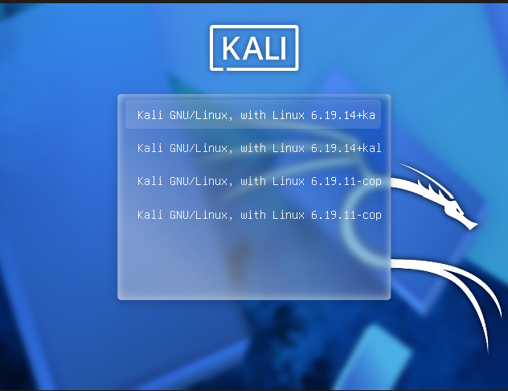
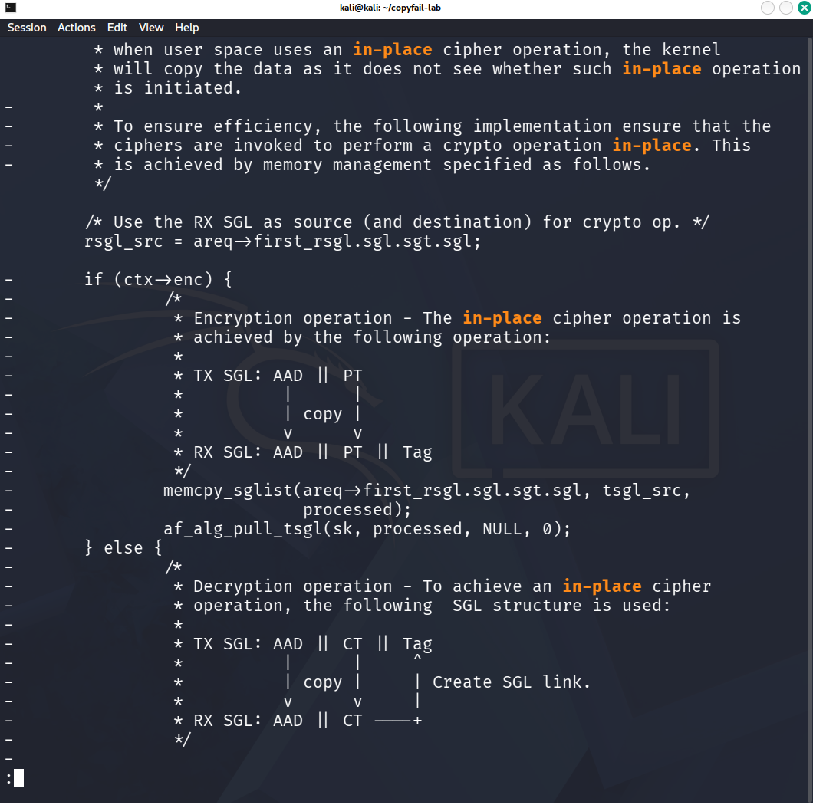
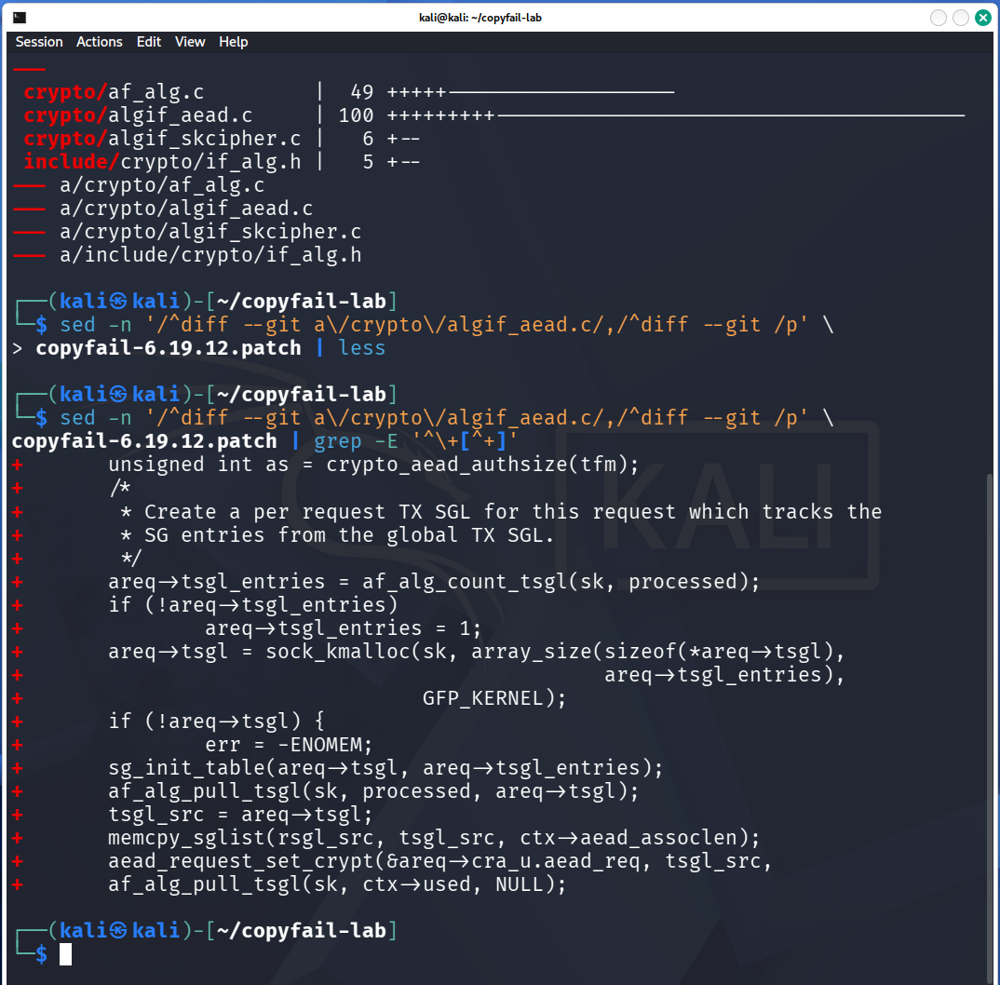

01
취약점 개요
CopyFail은 Linux 커널 AF_ALG 사용자 공간 암호화 인터페이스의 AEAD 처리 경로(algif_aead)에 존재했던 로컬 권한 상승 취약점이다. CVE 식별자는 CVE-2026-31431이다.
Linux CNA의 공개 정보에 따르면 이 문제는 Linux 4.14부터 존재했으며, Linux 6.19 안정 브랜치에서는 6.19.12에서 수정됐다. CVSS v3.1 점수는 7.8(High)이며, 벡터는 CVSS:3.1/AV:L/AC:L/PR:L/UI:N/S:U/C:H/I:H/A:H다. 원격 공격은 아니지만, 로컬의 일반 사용자 권한을 가진 공격자가 별도의 사용자 상호작용 없이 높은 권한을 얻을 수 있다는 의미다.
02
실험 환경
실습은 원본 Kali VM을 완전 복제한 뒤 진행했다. PoC 실행 전에는 네트워크, 공유 폴더, 공유 클립보드, 드래그 앤 드롭을 비활성화했다.
- 게스트 OS: Kali GNU/Linux Rolling 2026.2
- 가상화 환경: Oracle VirtualBox
- 취약 커널: 직접 빌드한
6.19.11-copyfail-vuln - 수정 커널: Kali 기본
6.19.14+kali-amd64
GRUB에는 기본 Kali 커널과 직접 빌드한 취약 커널이 함께 나타났다. 재현 단계에서는 세 번째 항목인 6.19.11-copyfail-vuln 일반 부팅 항목을 선택했다.

취약 커널에서 algif_aead 모듈을 로드하고, 의존 모듈 af_alg 및 모듈의 vermagic가 의도한 취약 커널 버전과 일치하는지 확인했다.
uname -r
sudo modprobe algif_aead
modinfo algif_aead
lsmod | grep -E 'algif_aead|af_alg'03
공개 PoC의 흐름
공개 PoC 전체를 재배포하지 않고, 동작의 핵심만 정리한다.
AF_ALG소켓을 만들고 AEAD 알고리즘을 바인딩한다.sendmsg()로 AEAD 요청을 구성한다.splice()를 두 번 사용해 대상 파일 페이지와 AF_ALG 소켓을 연결한다.- 이 과정을 파일의 여러 위치에 반복 적용한다.
- 마지막으로
su를 실행해 권한 상태 변화를 확인한다.
PoC에는 mmap()이나 execve()라는 문자열이 직접 나타나지 않는다. 파일 페이지 이동에는 splice()를 사용하고, 프로그램 실행은 Python의 os.system("su")를 통해 이뤄지기 때문이다.
공개 PoC가 대상으로 삼는 /usr/bin/su는 setuid root 프로그램임을 확인했다.

04
재현 결과
격리된 6.19.11-copyfail-vuln VM에서 공개 PoC를 실행한 뒤 id로 결과를 확인했다. 일반 사용자 세션에서 root 권한 획득이 확인됐다.
uid=0(root) gid=0(root) groups=0(root)반면 수정이 포함된 6.19.14+kali-amd64로 부팅한 Kali 환경에서 동일한 검증을 수행했을 때는 su: Authentication failure가 나타났고 root 권한을 얻지 못했다.
6.19.11-copyfail-vuln: root 권한 획득 확인6.19.14+kali-amd64: 권한 상승 실패
05
루트코즈
커널은 여러 조각의 메모리를 scatter-gather list(SGL)로 표현한다. 취약점의 핵심은 기존 algif_aead 코드가 수신용 RX SGL을 암호 연산의 입력(source) 과 출력(destination) 양쪽에 함께 사용했다는 점이다. 이를 in-place 처리라고 한다.
하지만 AF_ALG 경로에서 입력과 출력은 서로 다른 메모리 매핑에서 비롯될 수 있다. 특히 PoC처럼 splice()로 파일 페이지를 연결하는 흐름에서는, 같은 SGL을 입력과 출력에 함께 쓰는 가정이 안전하지 않다. 그 결과 공격자가 의도한 파일 내용이 변경될 수 있었고, 공개 PoC는 setuid root 프로그램인 /usr/bin/su를 대상으로 그 영향을 확인한다.
아래는 패치에서 제거된 기존 in-place 처리의 설명과 코드 경로다. 기존 코드는 RX SGL을 source와 destination으로 함께 사용했다.

06
패치 분석
수정 커밋의 제목은 다음과 같다.
crypto: algif_aead - Revert to operating out-of-place패치 설명은 source와 destination이 서로 다른 매핑에서 왔으며 algif_aead에서 in-place 처리의 이점이 없다고 명시한다.
수정의 핵심은 요청별 TX SGL을 새로 만드는 것이다.
기존: RX SGL -> source와 destination에 함께 사용
수정: TX SGL -> source
RX SGL -> destination패치에서는 af_alg_count_tsgl()로 필요한 TX SGL 엔트리 수를 계산하고, sock_kmalloc()으로 요청별 TX SGL을 할당한다. 이어서 af_alg_pull_tsgl()과 memcpy_sglist()를 이용해 입력을 별도 목록으로 준비한 뒤, aead_request_set_crypt()에 서로 다른 source와 destination을 전달한다. 즉, 입력과 출력을 분리한 out-of-place 처리로 변경해 잘못된 in-place 가정을 제거한 것이다.

07
대응 방안
가장 중요한 대응은 배포판 벤더가 제공하는 수정 커널로 업데이트하는 것이다. Linux 6.19 계열에서는 6.19.12에 수정이 포함됐다.
- 사용 중인 커널 버전과 배포판 보안 권고를 확인한다.
- 불필요한 AF_ALG 사용자 공간 인터페이스 노출을 검토한다.
- 로컬 일반 사용자 계정을 최소 권한으로 관리한다.
- setuid root 바이너리에 대한 파일 무결성 점검을 수행한다.
08
실습 중 어려웠던 점
이번 실습에서 가장 시간이 오래 걸린 부분은 취약 커널을 직접 빌드하는 과정이었다. 처음에는 Kali의 지역 미러에서 패키지를 내려받는 과정이 403·520 오류와 인증서 검증 오류로 실패했다. 패키지 소스를 공식 Kali 다운로드 서버로 변경하고, 시스템 시간을 점검한 뒤 필요한 빌드 도구를 설치해 해결했다.
커널 전체 빌드는 예상보다 오래 걸렸고, 진행률이 명확하게 표시되지 않아 컴파일된 오브젝트 수와 빌드 디렉터리 크기를 별도 터미널에서 확인했다. 또한 빌드 중 실수로 Ctrl+C를 눌러 중단했지만, 소스와 중간 산출물이 남아 있어 같은 make 명령을 다시 실행해 이어서 완료할 수 있었다.
재현 단계에서는 GRUB에 기존 Kali 커널과 직접 빌드한 커널이 함께 표시돼, 올바른 커널을 선택했는지 uname -r로 반드시 다시 확인해야 했다. 처음에는 수정된 6.19.14+kali-amd64로 부팅한 상태에서 PoC를 검증해 권한 상승이 실패했다. 이후 6.19.11-copyfail-vuln으로 부팅한 사실을 확인한 뒤 다시 검증했고, 취약·수정 커널의 결과 차이를 명확히 비교할 수 있었다.
마지막으로 공개 PoC의 코드가 압축돼 있고 함수명이 짧아 처음에는 recvmsg, mmap, execve가 보이지 않는 이유를 이해하기 어려웠다. Python API와 시스템 콜을 일대일로 대응해 보면서, splice()가 파일 페이지 이동을 담당하고 os.system("su")가 실행 역할을 한다는 점을 정리했다. 이 과정이 단순히 실행 결과를 확인하는 것에서 끝나지 않고, PoC와 커널 패치의 연결을 이해하는 데 도움이 됐다.
09
마무리
CopyFail은 암호 알고리즘 자체의 약점이 아니라, 커널이 암호 연산에 전달하는 입력·출력 메모리 목록을 잘못 공유한 구현 문제다. 격리된 실험에서 취약 커널은 권한 상승이 가능했고, 수정 커널에서는 동일 검증이 실패했다. 패치는 별도의 TX SGL을 도입해 source와 destination을 분리함으로써 문제를 해결한다.
10